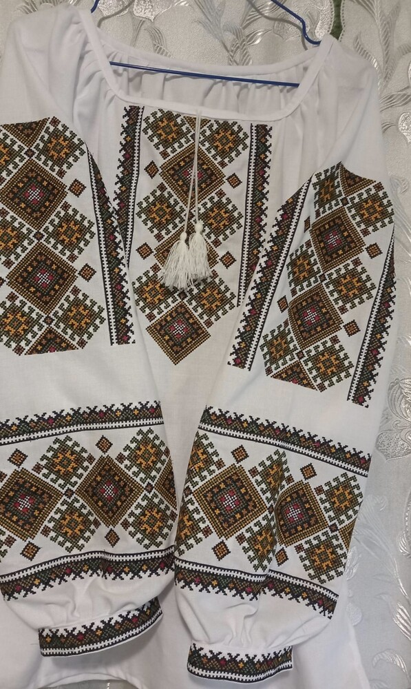

Carpathian Colors
Boykivska Embroidery
Hutsul Embroidery

Lemkiv Embroidery

Uzhhorod Embroidery
Zakarpattya embroidery (Transcarpathian region) is a surprisingly interesting and extremely diverse thing.
From the single-color "Poltava" style "white on white", Zakarpattya embroidery during the 19th and mid-20th centuries developed into an original combination of red and blue on a white background.
The same process covers ornaments, which evolve from simple geometric objects to complex naturalistic compositions with flowers. The main feature of Zakarpattya ornaments are zigzags, the so-called "curves" that perfectly complemented traditional rhombuses and magnificently decorated both men's and women's shirts.
In total, there were four main types of ornaments in Zakarpattya: Boykiv, Hutsul, Lemkiv, and Uzhhorod.
Boykivshchyna - a kind of business card of the region was "oplicha" - ancient women's shirts, which were embroidered with two needles at once: a coarse one, stretched with a seam, and a thin one, twisted into a mesh pattern. In addition to the ornaments usual for the region, the fights used mesh and anthropomorphic motifs. Colours: red, blue, white.
Hutsul embroidery is a large number of various techniques: low, stem, stipple, cross, mesh, smooth, topstitching, needlework. Ornaments of Eastern Transcarpathia, based on a rhombus or half-rhomb, as well as other geometric variations. Colour №1 is red in all its shades and manifestations. They are actively embroidering in green, yellow, blue and black.
Lemkiv region - at first, geometric ornament dominated here, and only in the 30s of the last century, flowers and plants began to appear, arranged in certain closed compositions. The colour scheme becomes red-blue, and the most popular techniques are cross and smooth.
Uzhhorod region - the embroidery of this region was significantly influenced by Slovak and Hungarian motifs. That is why shirts with red-black, red-yellow, pink ornaments (Hungarian trace), as well as dark blue, blue and various combinations with red (Slovak) are popular here.
The same process covers ornaments, which evolve from simple geometric objects to complex naturalistic compositions with flowers. The main feature of Zakarpattya ornaments are zigzags, the so-called "curves" that perfectly complemented traditional rhombuses and magnificently decorated both men's and women's shirts.
In total, there were four main types of ornaments in Zakarpattya: Boykiv, Hutsul, Lemkiv, and Uzhhorod.
Boykivshchyna - a kind of business card of the region was "oplicha" - ancient women's shirts, which were embroidered with two needles at once: a coarse one, stretched with a seam, and a thin one, twisted into a mesh pattern. In addition to the ornaments usual for the region, the fights used mesh and anthropomorphic motifs. Colours: red, blue, white.
Hutsul embroidery is a large number of various techniques: low, stem, stipple, cross, mesh, smooth, topstitching, needlework. Ornaments of Eastern Transcarpathia, based on a rhombus or half-rhomb, as well as other geometric variations. Colour №1 is red in all its shades and manifestations. They are actively embroidering in green, yellow, blue and black.
Lemkiv region - at first, geometric ornament dominated here, and only in the 30s of the last century, flowers and plants began to appear, arranged in certain closed compositions. The colour scheme becomes red-blue, and the most popular techniques are cross and smooth.
Uzhhorod region - the embroidery of this region was significantly influenced by Slovak and Hungarian motifs. That is why shirts with red-black, red-yellow, pink ornaments (Hungarian trace), as well as dark blue, blue and various combinations with red (Slovak) are popular here.